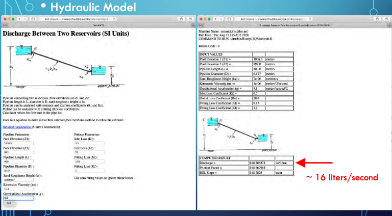

CE 3372 Water Systems Design
Pipeline Hydraulics#
Course Website
Readings#
Videos#
Lesson Outline#
topic1
topic2
topic3
Example: Steady Discharge between Reservoirs#
Here we examine relatively simple hydraulics problems (to refresh our fluids mechanics knowledge) - what is the discharge in the pipe for the situation depicted
Problem Statement#

Known Values#
Use tables and references to find known values
Roughness height:

Millimeters to Feet

Water Properties

Minor Loss Coefficients

Consolidate Values for Data Input#

Apply Tool#

Or using our Jupyter Script#
Our script below applied to the same inputs
# modified from getQfromH.py
# ipython module for pipeline hydraulics
# computation engine #########################
# import built in functions for log, sqrt
from math import log,sqrt
# Define the prototype function
def jainQ(pipe_diameter,pipe_length,roughness,viscosity,grabity,head_loss):
egl_slope = head_loss/pipe_length
t1 = sqrt(grabity*pipe_diameter*egl_slope)
t2 = roughness/(3.7*pipe_diameter)
t3 = 1.78*viscosity
jainQ = (-0.965*pipe_diameter**2)*t1*log(t2 + t3/(pipe_diameter*t1))
return jainQ
# values from Example
pipe_diameter = 2.0
pipe_length = 10680.0
roughness = 0.00328
viscosity = 1.41e-05
grabity = 32.2
head_loss = 20.0
# disable above and insert interface engine here
#
# now perform computation and construct output
discharge = jainQ(pipe_diameter,pipe_length,roughness,viscosity,grabity,head_loss)
# Echo inputs, and outputs
print ("Pipe Diameter : ", pipe_diameter)
print ("Pipe Length : ", pipe_length)
print ("Pipe Roughness Height : ", roughness)
print ("Liquid Viscosity : ", viscosity)
print ("Gravitational acceleration constant : ",grabity)
print ("Head loss : ",head_loss)
print ("Discharge : ",discharge)
Pipe Diameter : 2.0
Pipe Length : 10680.0
Pipe Roughness Height : 0.00328
Liquid Viscosity : 1.41e-05
Gravitational acceleration constant : 32.2
Head loss : 20.0
Discharge : 10.24529705017876
Results are close, but not identical. Why? The JupyterLab script did not include the minor loss terms
Linking Systems#
A hydraulic system can be analysed as a set of linked components to make an otherwise complicated system easier to analyze.
Idea is to decompose into smaller (hydraulically) independent parts, analyze the parts then reassemble (integrate) the parts to answer questions about the whole system
Example: Rural Water Supply to a Village School#

The figure is an aerial image of a pipeline system with preliminary engineering sketches of the system (lower left panel) and a detail sketch of the terminal small storage tank (upper right panel). The 3,200 meter long pipeline lifts 25C water ( \(\rho= 997 kg/m^3\),\(\nu= 8.94 E-7 m^2/s\)) from a treatment plant on the downstream face of Gulameta Dam through a 127 millimeter high-density polyethylene (HDPE) pipe (ks =0.0015 mm) to a large diameter at-grade cylindrical storage tank. A secondary, 800 meter long pipeline carries water from the large diameter storage tank to a small, cylindrical (D = 1 meter), elevated storage tank at the village school. Both storage tanks have float valves to prevent overflow and maintain the indicated water pool elevations.
Analyze proposed system to determine anticipated behavior under various situations:
Float valve fails at school
Outlet valve accidently left open
Pump operation under worst failure mode
Pump fails, time until system fails/drains
Float valve limited
Oultet valve limited
Float Valve at School Fails
Get dimensions

Get material properties, and loss coefficients

Apply On-Line Tool or JupyterLab script

The JupyterLab script is shown below, but needs modification for the minor losses. Hence the two values are sort of close, but without all losses the JupyterLab script as shown overestimates the discharge.
# modified from getQfromH.py
# ipython module for pipeline hydraulics
# computation engine #########################
# import built in functions for log, sqrt
from math import log,sqrt
# Define the prototype function
def jainQ(pipe_diameter,pipe_length,roughness,viscosity,grabity,head_loss):
egl_slope = head_loss/pipe_length
t1 = sqrt(grabity*pipe_diameter*egl_slope)
t2 = roughness/(3.7*pipe_diameter)
t3 = 1.78*viscosity
jainQ = (-0.965*pipe_diameter**2)*t1*log(t2 + t3/(pipe_diameter*t1))
return jainQ
# values from Example
pipe_diameter = 0.127
pipe_length = 800.0
roughness = 0.000007
viscosity = 1.0e-06
grabity = 9.8
head_loss = 14.3
# disable above and insert interface engine here
#
# now perform computation and construct output
discharge = jainQ(pipe_diameter,pipe_length,roughness,viscosity,grabity,head_loss)
# Echo inputs, and outputs
print ("Pipe Diameter : ", pipe_diameter)
print ("Pipe Length : ", pipe_length)
print ("Pipe Roughness Height : ", roughness)
print ("Liquid Viscosity : ", viscosity)
print ("Gravitational acceleration constant : ",grabity)
print ("Head loss : ",head_loss)
print ("Discharge : ",round(discharge*1000,3)," liters/sec")
Pipe Diameter : 0.127
Pipe Length : 800.0
Pipe Roughness Height : 7e-06
Liquid Viscosity : 1e-06
Gravitational acceleration constant : 9.8
Head loss : 14.3
Discharge : 21.185 liters/sec
School Outlet Valve Left Open
Treat as a hole in the tank, assume supply side is unchanged and maintains downstream water level

JupyterLab script for hole in tank (future version this book)
Tip
This linking approach may be useful in the Pecos Raw Water System. While EPANET doesn’t care, decomposition is useful when building HGL/EGL and Flowline Plots. Its also a reasonable way to check the complex model results with simplified hydraulics.